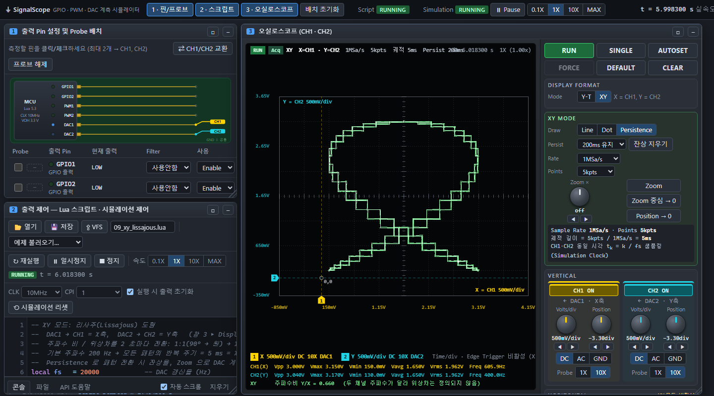

SignalScope
GPIO, PWM, DAC 출력 신호를 가상 오실로스코프로 측정하는 동작을 모사하는 프로그램입니다.

소개
출력 핀 6개(GPIO, PWM, DAC 각 2개)를 Lua 스크립트로 제어하고, 그 출력을 가상 오실로스코프로 측정합니다. 핀 설정, 스크립트, 오실로스코프가 웹 페이지 하나에서 각각의 창으로 동작합니다.
실행 방법
- 릴리즈에서
SignalScope.zip을 내려받아 압축을 풉니다. index.html을 더블클릭해 브라우저로 엽니다.- 빠른 시작 예제가 자동으로 실행되어 CH1, CH2 파형이 표시됩니다.
Chrome과 Edge를 권장합니다. Firefox에서도 동작하지만 PC 폴더 연결 기능은 쓸 수 없습니다.
주요 기능
- 핀·프로브 설정: 출력 핀 최대 2개를 CH1, CH2에 연결하고, 핀별로 LPF/HPF 필터와 Enable/Disable을 설정
- Lua 스크립트: 보드 클럭과 명령어 사이클 설정, 시뮬레이션 일시정지, 0.1X부터 MAX까지 속도 조절
- 오실로스코프: Auto/Normal/Single 트리거, Sample/Peak Detect/Average 획득, Zoom, 자동 측정, CSV 저장
- XY 모드: CH1을 X축, CH2를 Y축으로 표시하고 Line, Dot, Persistence 표시 지원
- 파일·네트워크: 가상 파일 시스템, PC 폴더 연결, 스크립트에서 HTTP나 WebSocket으로 외부 데이터 수신
- 예제와 문서: 예제 13개와 Lua API 문서 제공
